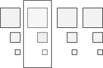
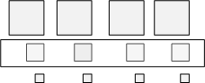
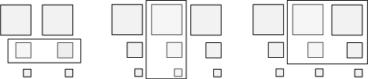

This topic describes texture subresources, or portions of a resource.
Direct3D can reference an entire resource or it can reference subsets of a resource. The term subresource refers to a subset of a resource.
A buffer is defined as a single subresource. Textures are a little more complicated because there are several different texture types (1D, 2D, etc.) some of which support mipmap levels and/or texture arrays. Beginning with the simplest case, a 1D texture is defined as a single subresource, as shown in the following illustration.
This means that the array of texels that make up a 1D texture are contained in a single subresource.
If you expand a 1D texture with three mipmap levels, it can be visualized like the following illustration.

Think of this as a single texture that is made up of three subresources. A subresource can be indexed using the level-of-detail (LOD) for a single texture. When using an array of textures, accessing a particular subresource requires both the LOD and the particular texture. Alternately, the API combines these two pieces of information into a single zero-based subresource index, as shown in the following illustration.

Some APIs access an entire resource (for example the ID3D11DeviceContext::CopyResource method), others access a portion of a resource (for example the ID3D11DeviceContext::UpdateSubresource method or the ID3D11DeviceContext::CopySubresourceRegion method). The methods that access a portion of a resource generally use a view description (such as the D3D11_TEX2D_ARRAY_DSV structure) to specify the subresources to access.
The illustrations in the following sections show the terms used by a view description when accessing an array of textures.
Given an array of textures, each texture with mipmaps, an array slice (represented by the white rectangle) includes one texture and all of its subresources, as shown in the following illustration.

A mip slice (represented by the white rectangle) includes one mipmap level for every texture in an array, as shown in the following illustration.

You can use these two types of slices to choose a single subresource, as shown in the following illustration.

Or you can use these two types of slices with the number of mipmap levels and/or number of textures, to choose multiple subresources, as shown in the following illustration.

[!Note]
A render-target view can only use a single subresource or mip slice and cannot include subresources from more than one mip slice. That is, every texture in a render-target view must be the same size. A shader-resource view can select any rectangular region of subresources, as shown in the figure.
Â
Â
Â